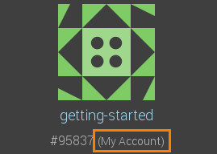
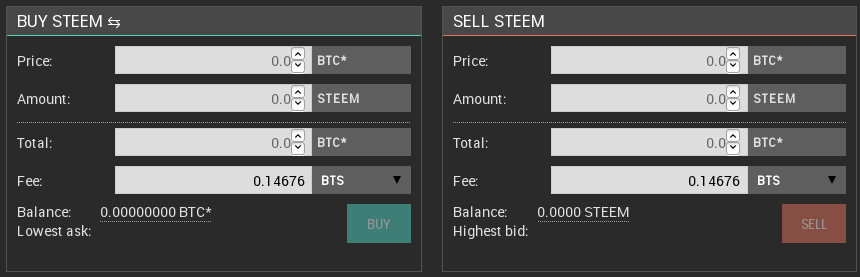

First Steps for End-Users¶
This guide gives a quick introduction of how to use BitShares as an end-user.
Choose your Client¶
Several ways existing to enter the BitShares network that focus on different aspects. To actually interact with the BitShares ecosystem, you can either
- download the Official Light Client
- or access the network in the browsers via one of our partners:
- OpenLedger
- BitShares.org
- Decentral.exchange
- BunkerDex (under construction)
- more to come
All of these solutions have one thing in common: You have sole control of your accounts and funds and they are created on your computer (within the light-client or the browser). Hence, you will only be able to access your account on the computer that you have used to register and create your account, unless you export your wallet and import it somewhere else.
Accounts, Wallets, Keys: Terminology!¶
Most clients distinguish between accounts from wallets and all of they use keys to access funds. Let’s quickly clarify the terms here:
- Keys: Keys refer to the cryptography used to secure access to your account and funds. It is of importance to prevent others from gaining access to these. This is why you have to provide a passphrase that is used to store the keys in an encrypted way.
- Accounts: Each user has at least one account that can be used to interact with the blockchain. In the end, this can be seen as a single banking account with an individual balance, transaction history, etc. Since these accounts are registered on the blockchain and are open to the public, we recommend to pick a pseudonym to achieve some privacy. The advantage of using account names is that people can identify you by using a readable and memorable word instead of cryptographic addresses.
- Wallet: Since users can (if they have a lifetime membership) register multiple accounts in parallel, all of them are stored in a single wallet. Hence, a wallet can carry many accounts. Furthermore, users can create multiple wallets to organize their accounts properly.
Create an Account¶
In order to use BitShares, you will need to register an account. All you need to provide is an account name and a password to secure your wallet:
The identicon at the top can be used to verify your account name to third parties. It is derived from your account name and gives a second verification factor. And this is how you register your account:

In contrast to any other platform you have ever used: Creating an account at one of our partners will make your account available at all the other partners as well.. Hence, your account name can be seen similar to a mail address in such that it is unique and every participant in the BitShares network can interact with you independent of the actual partner providing the wallet.
After creation of your account, you will see an Account link in the top navigation bar to browse to your account.
Note
Whether you control an account or not can be seen from the account’s overview. If it states (Your Account), you do have the requird keys installed in your wallet to access its funds. Otherwise, you can only view the account but cannot transact from it!
{kind=link}
Backup your account¶
Since you are the only individual that has access to your account and funds, it is your responsibility to make a secure backup of your registered account.
Once you have registered your account, you can click the warning in the footer to directly enter the backup page of your wallet:
- Click the Backup required link in the footer
{kind=link}
- Click Create Backup
- Click Download and store the file safely. Make sure to remember the passphrase you provided when you created your wallet (above) as the downloaded file is encrypted with it.
- (optionally but recommended) Note the
xxxxxx * SHA1checksum to verify the backup
Fund your account¶
In order to fund your account you have two options:
- Transfers: Ask a partner or exchange to send funds to you. To do so, you will only need to provide them with your account name.
- Deposits: By visiting your deposit/withdraw page in your account’s navigation, you can use one of our partners to move over existing funds into your BitShares account.
In order to understand the meanings of different assets, we recommend you to read through our assets page.
Commonly used Features¶
Moving Funds¶
Using the transfer tool available from the main menu bar allows to move funds from your account to an arbitrary other account. If you enter the transfer page, your account name will be pre-filled into the source field. You will need to provide the recipient’s account name, the amount and asset to transfer and can optionally add a memo to help the recipient to identify your transfer (the memo is encrypted and only you and the recipient can read it).

Note
On the BitShares blockchain, people never need to deal with addresses or public keys but can instead use account names. Your account name becomes the email address for your funds.
Trading in the Decentralized Exchange (DEX)¶
To trade your assets into other assets you can use the built-in decentralized exchange (often referred to as the DEX). It is available using the Trade menu item and shows a list of commonly used markets.

By clicking any of the rows, you enter a particular market in which you can participate by selling or buying from the market or by placing a orders into the order books at your price.

Once an order is filled, the corresponding asset will appear in your balance immediately. In BitShares, clearing and settlement are performed instantaneously.
{kind=link}
Read more:
Exploring the Blockchain¶
The blockchain and business can be investigated using the built-in explorer from the main navigation bar. There you can take a closer look at:
- the blockchain,
- the available assets,
- registered accounts,
- witnesses,
- committee members,
- markets, and
- the fee schedule.